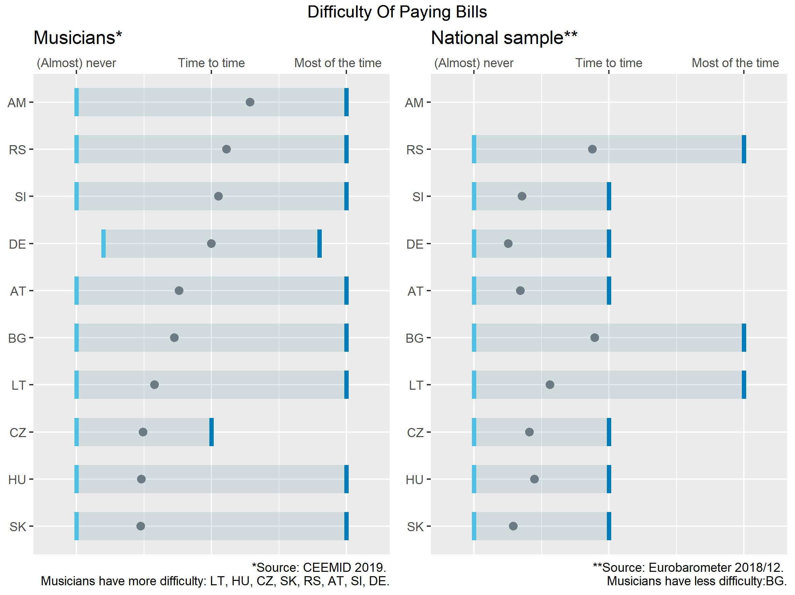
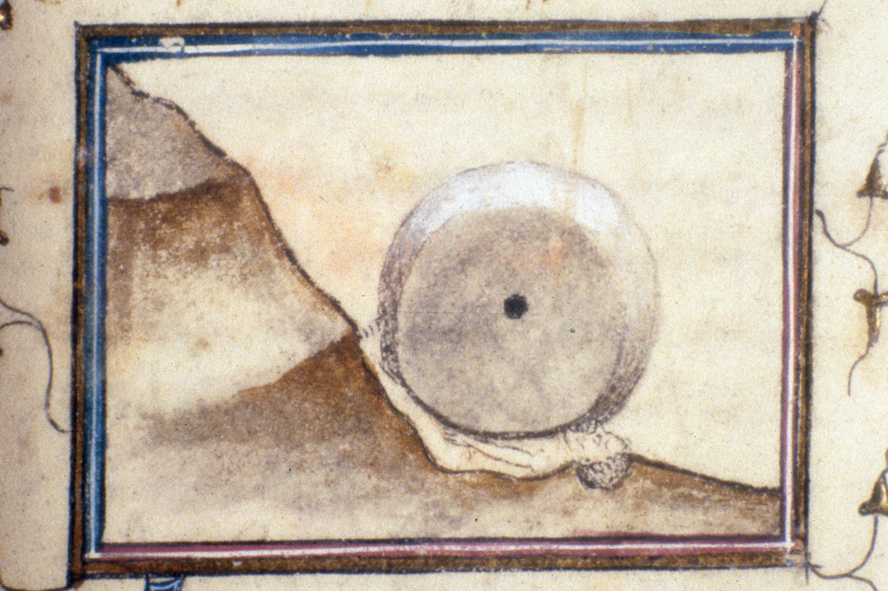
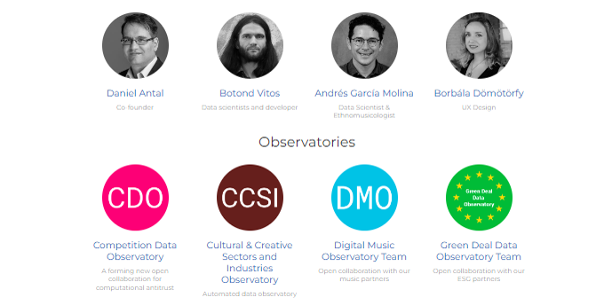
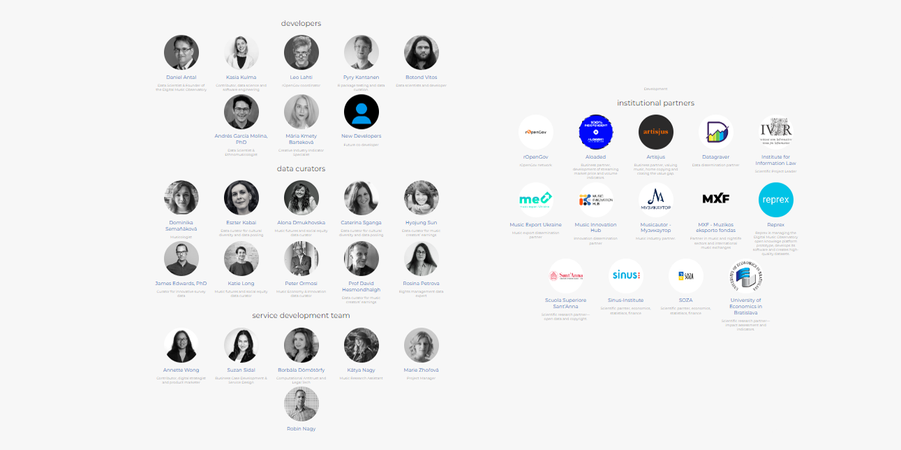
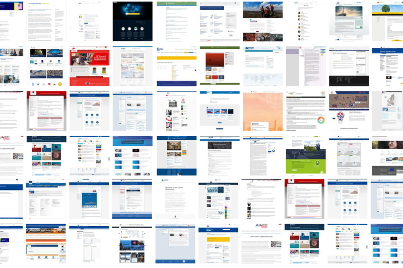
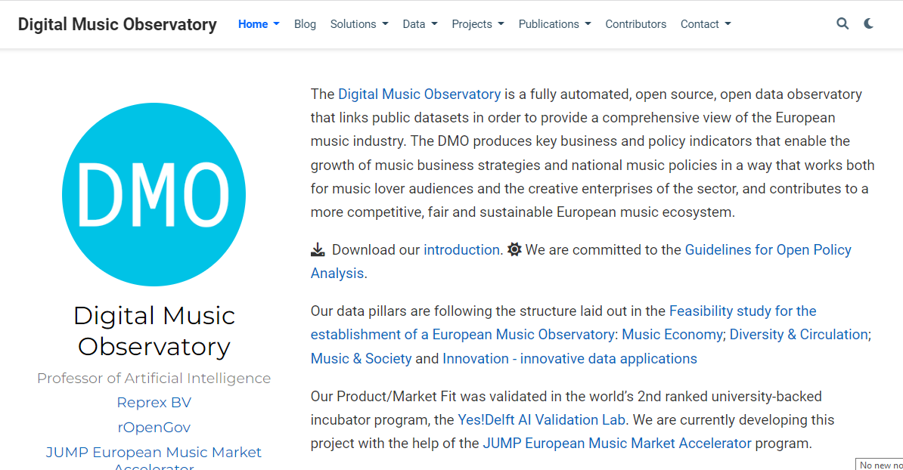
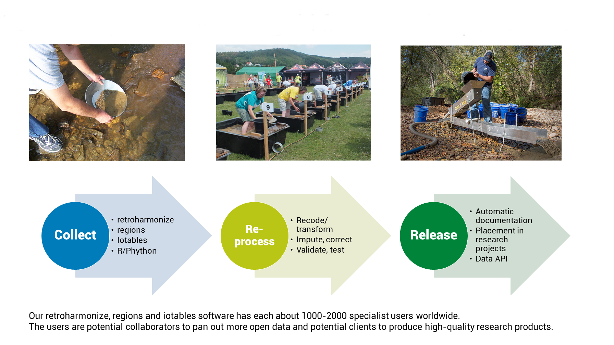
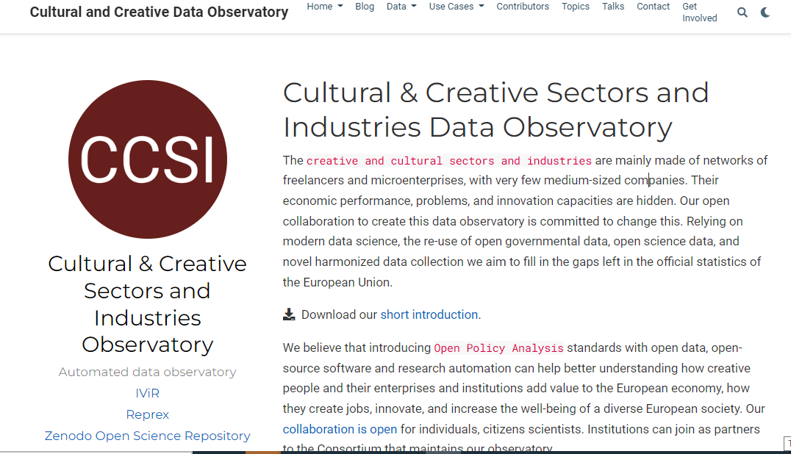
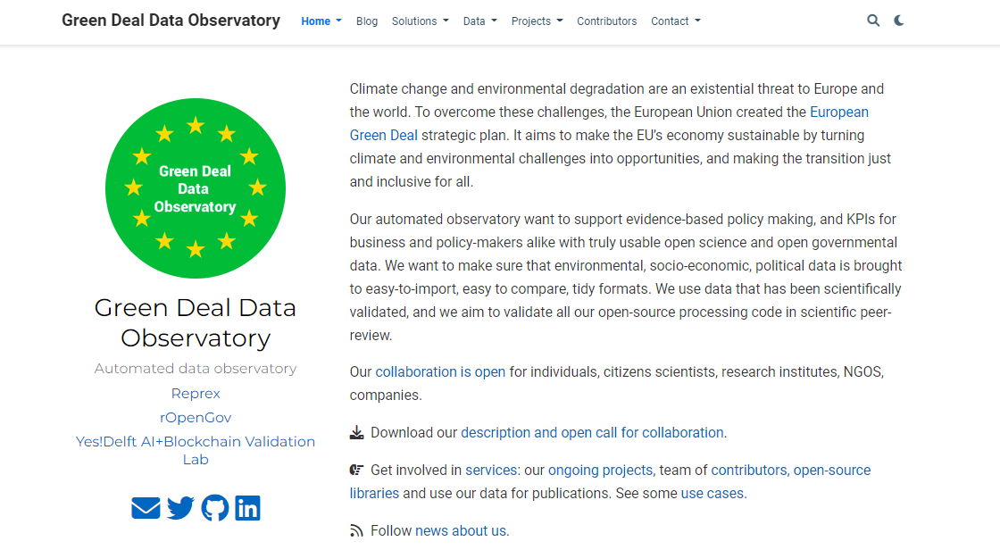
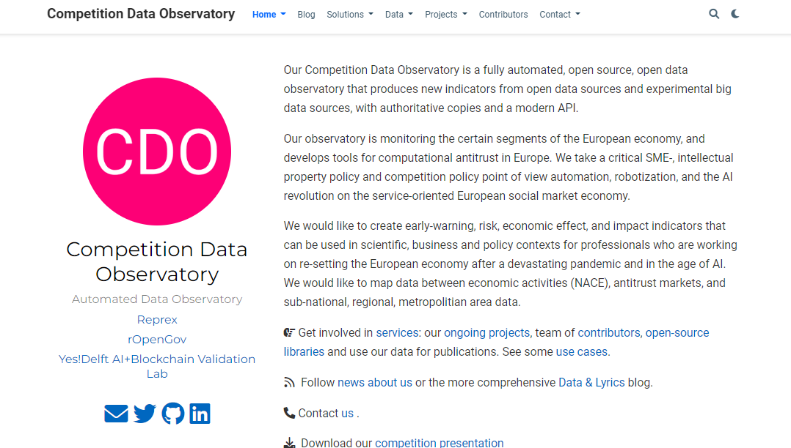

Only the largest corporations, best-endowed universities, and rich governments can afford data collection and processing capacities that are large enough to harness the advantages of AI.
Fullscreen: F
️> or Space | Previous :️<Home | Finish: EndEsc| Speaker notes: SAlt + Click 🖱️Reprex: No matter how big is the problem or how small is your team, we fill your reports, dashboards, newsletters, books with data and its visualization.
Eviota: We map your material impacts in your value chain and connect it with environmental or social data that is re-used from the public sector.
Most SMEs, and civil society organizations do not have a data scientist/engineer in their team, maybe not even an IT person or a HR professional to make such a hire.
When these organizations must solve novel problems, like connecting their financial accounts with environmental and social impact data or connecting to automated transaction systems (like in music), they need novel solutions that do not require managing a database within their organization.
Most SMEs, and civil society organizations do not have a data scientist/engineer in their team, maybe not even an IT person or a HR professional to make such a hire.
To access green bank loans, insurance products, subsidies, or investments, or to keep track of their sustainability goals in line with the Paris Accord or gender equality plan, organizations must connect their accounting system to external environmental data. We connect their accounts with impact estimates from reliable scientific sources.
|  | The cost of questionnaire-based market research (survey) is increasing exponentially and offers mediocre results without an enormous question bank and harmonization with other surveys.(See 🖱 blogpost) |
Manual data acquisition is an error-prone and boring task for humans that requires many working hours (often not credited in consultancies, law firms, or research institutes.) |
|
|  | Wrangling spreadsheet tables or word processor documents by people without data knowledge is the 🖱 data Sisyphus. |
We create data ecosystems with the modernization of the EU/OECD/UN-endorsed 'data observatory' concept. Our data observatory 3.0 uses the knowledge graphs of the web of data.
We acquire and process data on a scale in our data observatories. We acquire and process data on a scale in our data observatories. Our approach significantly reduces the cost of data acquisition and opens invisible, reliable governmental and scientific data sources. We are currently building five observatories, and one of them is already mature enough to be considered for official EU recognition (serving the music industry).
We provide applications, for example, our Eviota application, which connects financial accounts with environmental and social data, and crates reliable indicators and benchmarks for the requirements of the sustainable finance package.
We create data ecosystems with the modernization of the EU/OECD/UN-endorsed 'data observatory' concept. Our Green Deal Data Observatory uses the knowledge graphs of the web of data and gives access to reliable, often unseen, hard-to-access ESG data sources.
We acquire and process data on a scale in our data observatories. Our approach significantly reduces the cost of data acquisition and opens invisible, reliable governmental and scientific data sources.
We provide applications, for example, our Eviota application, which connects financial accounts with environmental and social data, and crates reliable indicators and benchmarks for the requirements of the sustainable finance package. Unlike our competitors, we can serve SMEs, too, at a competitive cost.
We create data ecosystems with the modernization of the EU/OECD/UN-endorsed 'data observatory' concept. Our Green Deal Data Observatory uses the knowledge graphs of the web of data and gives access to reliable, often unseen, hard-to-access ESG data sources.
We acquire and process data on a scale in our data observatories. Our approach significantly reduces the cost of data acquisition and opens invisible, reliable governmental and scientific data sources.
We provide applications, for example, our Eviota application, which connects financial accounts with environmental and social data, and crates reliable indicators and benchmarks for the requirements of the sustainable finance package. We are validating our product in the regulatory sandbox of a central bank to show that we provide a cost-effective solution to many regulatory problems opened by the new [sustainable finance package of the EU](https://finance.ec.europa.eu/publications/sustainable-finance-package_en).
Reprex has a special know-how to map and connect private datasets managing the boundaries of organizations that often have conflicting interests. Our know-how was developed over 10 years, and the data of about 60, often conflicting music industry actors in 12 countries.
Our team has many years of experience with working public sector information reuse, or 'open data', and have built reliable open source software to process legally open, not readily downloadable, and very valuable information that is not available for market vendors.
We use RDF (linked open data) and other technologies to link scattered small data to big data; we use our own R libraries to test and process various data into reliable statistical data or indicators.
Based on our unique data access and software we are developing the Eviota App to connect financial accounts and environmental, social and governance data.
|  | The two co-founders, 🖱 Daniel Antal, CFA and 🖱 Andrés García Molina, PhD, and the core team manage the ecosystems’ development, develop knowledge management, and direct the software development. 🖱 Team on full screen |
|  | Each observatory has a broader team of users, data and knowledge curators, and developers. The most developed 🖱️ Digital Music Observatory has 16 institutional users and a team of about 20 music and data professionals. The newer observatories have a smaller, initial service development and data curatorial team. |
Inception: Yes!Delft AI+Blockchain Product Market Fit Validation with the Digital Music Observatory
New observatory development started with computational antitrust, ESG reporting, and
Several, peer reviewed software releases
DMO has more than 20 curators, 3 million euro budget for 3 years, increasing user base.
Eviota and the Green Deal
We are part of rOpenGov and have access to very special knowledge working with national accounts data and ESG data used by governments to keep track with the Paris Accord. We can access data cheaper, faster, better than our competitors.
We have a know-how to manage conflicts of interest and very complex data use rights.
Reprex is offering shared data ecosystems. Our observatories are great solutions for organizations without a data specialization:
🌳 Organizations that cannot afford to build a large enough data team to sustain consistent, extensive data collection and processing (many large institutions and companies) |
🪴 Who cannot hire even a single data engineer or a data scientist (medium-sized companies, NGOs) |
🌱 Who do not even have a permanent IT function (about 2 million European small enterprises and civil society organizations) |
|  | The European Union, the World Bank, OECD, and UN have facilitated the creation of more than 80 so-called ‘data observatories’ to help companies, researchers, NGOs, and governments systematically collect data and knowledge. |
|  | We are currently building one prototype for the European Music Observatory financed by the European Union and music industry players (cc 3-4 million euros.) We would like to take over existing or start new observatories in 2 years at least 5) |
|  | Our observatories are competitive, because they use high-quality open source scientific software; they exploit the new Data Governance Act and Open Data Directive, deploy web 3.0 data synchronization, and offer great value-added research products. |
| Platform products | Value added data applications |
|---|---|
The European Union, the World Bank, OECD, and UN have facilitated the creation of more than 80 so-called ‘data observatories’ to help companies, researchers, NGOs, and governments systematically collect data and knowledge. |
The different observatories offer different types of knowledge products, such as statistical yearbooks, various apps, and database access. |
Most of them use web 1.0 technologies, inefficient knowledge accumulation. Already 20 of them have been discontinued. |
We are developing software solutions that exploit our platforms: we harmonize surveys, statistical data, automate research reporting, elements of market monitoring or ESG reporting. |
We are currently building one prototype for the European Music Observatory financed by the European Union and music industry players (cc 3-4 million euros.) We would like to take over existing or start new observatories in 2 years at least 5) |
Each observatory gives us intimidate customer access to 3-4 large universities, 1-2 large consultancies, and various specialist institutions. |
Buma/Stemra like copyright management agencies, music export offices, festivals and venues, University of Amsterdam, Sant’Anna, Economic University of Bratislava, ministries of culture, grant agencies. |
|
|  | University of Amsterdam, Europeana, Sant’Anna, Hungarian Film Fund |
|  | Connected financial and sustainability reporting: bank consultancies, big four audit companies, large environmental NGOs. |
|  | Antitrust agencies, law firms, economics consultancies working with mergers and other competition related issues. |
The observatory platforms usually have a build-up cost of about 3-5 million euros and an annual running costs of 0.1-3 million euros. |
We hope to gain at least 10% global market share on the observatory platform management market to pay our basic data science team and R&D. |
Our existing observatories give us access to the market and public surveying markets (cc € 30-40 bn in the developed nations), particularly to its software component (€ 10 billion euros). |
retroharmonize integrates pre-existing questionnaire-based surveys and new surveys. We see interest from the biggest global players. |
Our existing observatories gave us access to environmental impact assessment and currently we build an ESG reporting tool with a central bank, a value bank, and a big four company. |
Connected ESG reporting has a €4 bn market in the EU alone, and our Eviota product is very competitive. Due to regulatory pressure, we can harvest a decent share if we are able to attract venture capital. |
The two co-founders, 🖱 Daniel Antal, CFA and 🖱 Andrés García Molina, PhD, and the core team manage the ecosystems’ development, develop knowledge management, and direct the software development. 🖱 Team on full screen |
|
Each observatory has a broader team of users, data and knowledge curators, and developers. The most developed 🖱️ Digital Music Observatory has 16 institutional users and a team of about 20 music and data professionals. The newer observatories have a smaller, initial service development and data curatorial team. |
💻 Our free scientific software products have a steadily growing user base (several thousand users globally.) |
📈 We are able to convert this to paying research automation services at a higher growth rate. |
🚀 We won four competitive tenders this year, but we feel that the slow tendering/acquisition/cash cycle is hampering our growth, we see far more opportunities that we can serve. Therefore we are looking for investors. |
We have a good track record in EU tenders, but we would like to build up this reputation in the Netherlands, too, mainly for new platforms. |
We help our non-profit users, such as cultural heritage organizations, music export offices, collective rights management agencies to get funding to use our platforms and services |
Our for profit-users need a more polished, user-friendlier front-end. Some are interested in joint ventures (like exploiting our survey capabilities). Venture capital would be preferred, as demand outstrips growth. |
LinkedIn: Daniel Antal - Reprex